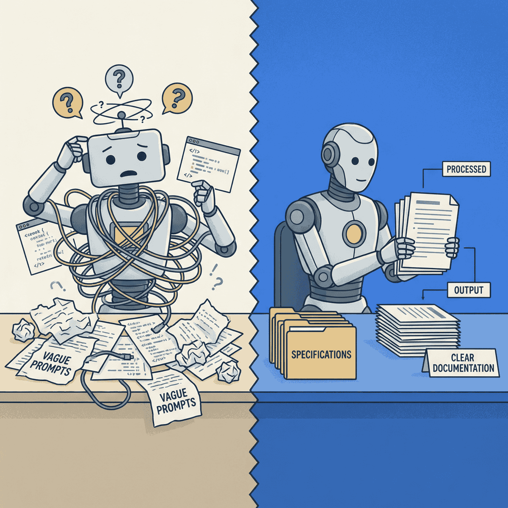

Working With AI Means Doing More Work

TL;DR
- AI is a force multiplier, not magic—multiplying zero preparation by 10x still yields zero
- Companies succeeding with AI invest in specifications, context curation, and structured workflows
- The work shifts from coding to specifying—from typing to thinking
- Start with one practice: write a 15-minute spec before your next AI task
The companies getting the best results from AI are doing more work, not less.
They’re writing specifications before asking AI to code. They’re building “harnesses” to guide AI behavior. They’re treating AI like a capable new hire who needs onboarding—not a magic wand that reads minds.
This is the counterintuitive truth about AI productivity: getting more from AI requires investing more upfront.
The expectation versus the reality
Most companies adopt AI expecting to reduce workload. The fantasy goes something like this: “AI will write the code so my engineers don’t have to.”
Reality disappoints them.
AI-generated code gets rewritten. Reviews pile up. Quality suffers. Developers report feeling more productive while organizations see no measurable gains. This is the AI productivity paradox—and it’s playing out in company after company.
The root cause? AI accelerates the wrong thing. Coding was never the bottleneck.
Planning, specification, review, and deployment are the actual constraints. Speed up the coding step without addressing these, and you just create faster chaos.
If your AI investment isn’t paying off, the problem probably isn’t the AI.
— Clarke Bishop
Why AI needs more from you
Here’s the fundamental insight: AI is a force multiplier, not a replacement.
Multiplying zero preparation by 10x still yields zero. Multiplying vague requirements by 10x produces 10x more confusion.
Anthropic’s engineering team published research on this exact problem. They describe something called context engineering—the discipline of curating exactly what information an AI sees at each step.
The core challenge they identify: as you stuff more context into an AI’s window, its ability to recall and use that information actually decreases. They call this “context rot.” Every additional token competes for the AI’s limited attention.
The solution isn’t to throw everything at the AI and hope for the best. It’s to find what Anthropic calls “the smallest set of high-signal tokens that maximize the likelihood of some desired outcome.”
In plain English: give the AI exactly what it needs, nothing more.
Think of AI as a brilliant new hire. Would you hand a new engineer a vague task and expect perfect output? No. You’d provide context, documentation, constraints, and clear success criteria.
AI is no different.
What happens without structure
Anthropic’s research on long-running agents reveals two failure patterns that emerge when AI works without proper guidance.
Over-ambition. The AI attempts to complete entire projects in one go, runs out of context mid-implementation, and leaves features half-finished and undocumented.
False completion. The AI sees partial progress and prematurely declares victory, missing critical remaining requirements.
Both failures share the same root cause: insufficient structure.
The solution they propose? A “harness”—the steering and brakes that turn raw AI capability into useful output. The harness includes initialization procedures, progress tracking, clear scope boundaries, and verification steps.
Without the harness, you have an engine revving in neutral. With it, you have transportation.
The orchestration framework that wraps an LLM with tools, memory, planning loops, and control logic—turning a stateless model into an autonomous agent that can reason and act across multiple steps.
What the best teams actually do
Successful AI-augmented teams invest in three practices. None of them involve working less.
1. Spec-driven development
Before asking AI to implement anything, write the requirements and constraints first.
Google engineer Addy Osmani describes his approach as doing a “waterfall in 15 minutes”—rapid structured planning that makes subsequent coding dramatically smoother. The specification becomes the prompt context.
The specification doesn’t need to be elaborate. It needs to be clear. What are the inputs? What are the outputs? What constraints apply? What does “done” look like?
When you’ve answered these questions, you’ve done the work that makes AI effective. When you haven’t, you’re about to discover why AI seems to produce disappointing results.
2. Context engineering
Curate the information AI sees at each step.
This means actively deciding what to include—and what to leave out. Relevant code. Applicable documentation. Known constraints. Architecture decisions.
It also means just-in-time retrieval over dumping everything in. Load information when the AI needs it, not all at once upfront.
Your architecture decision records become AI context. Your documentation becomes AI context. The investment you’ve already made in clear communication starts paying dividends in AI productivity.
3. Structured agent workflows
For longer tasks, the best teams use an initializer-plus-worker pattern.
The initializer sets up the environment, creates progress tracking, and establishes clear boundaries. The worker operates within those boundaries, focusing on one feature per session, leaving code in a “mergeable” state.
The engineers thriving with AI aren’t the ones who stopped working—they’re the ones who started working differently.
— Clarke Bishop
Progress gets tracked between sessions. Success criteria get verified before moving on. The AI never has to figure out where it is or what to do next—that information is provided.
This is more work than typing ad-hoc prompts. It’s also dramatically more effective.
The work shifts, not disappears
Here’s how the change looks in practice.
Old model: Engineer writes code, reviewer checks it.
New model: Engineer writes spec, AI writes code, engineer validates and iterates.
The valuable skills shift. From typing to thinking. From coding to specifying. From implementation to design.
Senior engineers become more valuable, not less. The skills that matter are the ones AI can’t replicate: understanding business context, making architectural tradeoffs, recognizing what “good” looks like, and designing systems that will still make sense in two years.
Junior engineers who can clearly specify what they need get leveled up. Junior engineers who can’t are going to struggle more than before, not less.
Getting started
You don’t need to overhaul everything. Start with one practice.
Write a spec first. Before your next AI coding task, spend 15 minutes writing requirements. What’s the goal? What constraints apply? What’s out of scope? Try it once and notice the difference.
Curate your context. Include relevant code, documentation, and constraints in every prompt. Don’t make AI guess what you already know.
Review intentionally. Treat AI output like a capable junior engineer’s pull request, not finished code. You’re responsible for what ships.
Small investments in structure yield outsized returns. The companies winning with AI figured this out early.
The paradox resolved
The AI productivity paradox dissolves once you understand what’s actually happening.
More work upfront equals less work overall. The time you invest in specifications comes back multiplied in reduced iteration. The context you curate comes back in higher-quality output. The structure you build comes back in predictable results.
AI rewards preparation, not shortcuts.
The competitive advantage in the AI era isn’t having access to AI—everyone has that. It’s knowing how to work with AI effectively.
Pick one practice and try it this week.
Ready to accelerate your AI initiatives? Let’s talk about how fractional CTO support can help your team move faster.